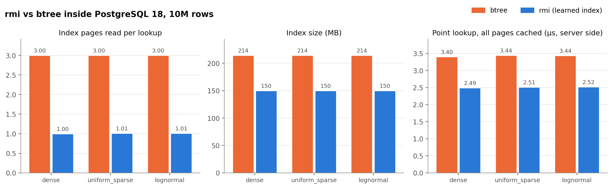
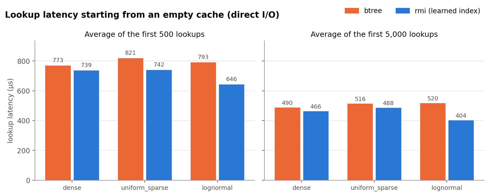
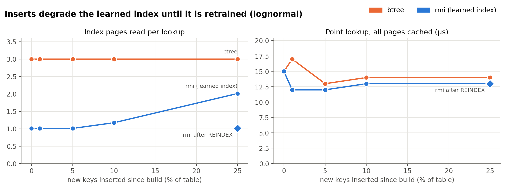
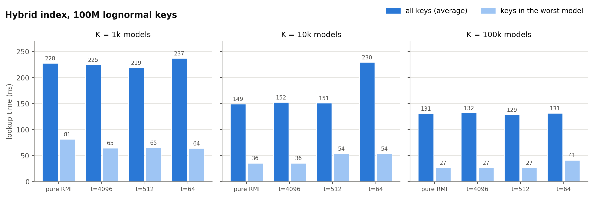

At the checkpoint we had a two-stage RMI and a read-only B-Tree, compared in memory. Since then we built the learned index into PostgreSQL 18 as a real index type, improved the model where it was weakest, added the paper's hybrid index, and tested on real data.
CREATE INDEX ... USING rmi (k). It answers equality and range queries, accepts inserts and deletes, works with VACUUM, retrains with REINDEX, and recovers after a crash.fb_200M_uint64).Main result, PostgreSQL 18 with 10M rows, compared with the built-in btree:
| Measure | btree | rmi | Change |
|---|---|---|---|
| Index pages read per lookup | 3.00 | 1.00 to 1.06 | about 3× fewer |
| Index size | 214 MB | 150 MB | 1.43× smaller |
| Point lookup inside the server, cached | 3.2 to 3.4 µs | 2.4 to 2.5 µs | 24 to 27% less |
| Index build, one core | 4.7 to 4.8 s | 3.4 to 3.5 s | 27 to 29% less |
| Point lookup as a full SQL statement, cached | 14 to 16 µs | 13 to 14 µs | small |
The checkpoint's headline numbers do not carry over. Size improves by 1.43×, not 262×, because a PostgreSQL table is not sorted by key, so the index has to store a (key, row pointer) pair for every row. The model only replaces the upper levels of the tree. The gain inside a database is fewer page accesses, and most of a SQL statement's time is spent elsewhere.
The extension is about 1,600 lines of C in pg_rmi/. It uses PostgreSQL's index access method API, so the planner, executor and VACUUM treat it like any other index.
| Blocks | Contents |
|---|---|
| 0 | Meta page: row count, model parameters, where each section starts. Never changes after build. |
| 1 to m | Model pages: stage-1 knots and stage-2 models. 24 bytes per model. |
| Next L | Leaf pages: sorted keys and row pointers, 14 bytes per entry, 90% full at build by default. |
| After that | Overflow pages, created by inserts and chained from a leaf. |
Each backend loads the models into memory once, so predicting costs no page access. The model gives a position in the sorted data, and position / entries-per-leaf gives the leaf. Each leaf stores fixed low and high boundary keys. If the key is outside them, we binary search over the pages inside the model's error bounds, and widen the search if those run out. A wrong prediction therefore costs extra page reads but can never produce a wrong answer. This also covers absent keys and the start of range scans, where the error bounds alone are not enough.
Three things PostgreSQL requires that the C++ version never had to handle:
WHERE k = 5 has an int4 constant, so the operator family includes cross-type operators.Leaves never split, because the position-to-page mapping depends on that. An insert goes in sorted order into the leaf that owns the key. When the leaf is full, it goes to that leaf's overflow chain, and lookups must then read the chain too. REINDEX retrains and removes the chains in about 4 seconds at 12.5M rows. All page changes go through PostgreSQL's generic WAL, so they survive a crash. A scan keeps its current page pinned while it returns that page's rows, and VACUUM waits for those pins, so a scan can't return a row whose slot has been reused.
Every check compares the exact set of rows from both an index scan and a bitmap scan against a sequential scan. Tables covered dense, lognormal, uniform and negative keys, long runs of duplicates, NULLs, a single row, identical keys and an empty table, with queries on present keys, absent keys and the limits of bigint. We repeated the checks after inserts that overflow leaves, after deletes, updates and VACUUM, and after REINDEX. We also ran 275,638 concurrent read, insert and delete transactions from 16 clients with no failures, and stopped the server with an immediate shutdown right after a bulk insert. After recovery the row count matched and the checks passed.
Setup: PostgreSQL 18.6 on an i7-13620H with NVMe storage, 1 GB of shared buffers, and 10M rows in each table. Each dataset is loaded twice with the same rows in the same heap order, one table per index, and parallel index builds are off. The two indexes take turns in every round and we report medians of 3 to 5 rounds. Our first run measured btree first every time, and the machine's speed changed partway through, so we discarded those timings.

EXPLAIN (ANALYZE, BUFFERS) on Bitmap Index Scan nodes, averaged over 2,000 lookups. Latency is measured over 200,000 lookups inside a server-side loop with a cached plan.On real Facebook keys, sampled down to 10M, the result is the same shape: 1.06 pages per lookup against 3.00, 150 MB against 214 MB, and 2.43 µs against 3.22 µs. The extra 0.06 pages reflect a harder key distribution, with an average error window of 180 positions, compared with 37 on lognormal.

The median favours rmi in all six cases, by 4 to 22%, but on dense keys the rounds overlap, so that gap is not clear. On uniform and lognormal keys they do not overlap. The gap is smaller than the page counts suggest. We estimate a btree of this size has about 75 pages above the leaves, and they stay cached after the first few lookups, so most of the time both indexes do one leaf read and one heap read. The gap is largest on lognormal, and we do not have an explanation for that.
| Rows per range | dense btree / rmi | uniform btree / rmi | lognormal btree / rmi |
|---|---|---|---|
| 100 | 116 / 128 µs | 128 / 104 µs | 131 / 123 µs |
| 10,000 | 7,285 / 7,226 µs | 7,362 / 7,325 µs | 7,515 / 7,166 µs |
Range scans are about the same for both, and btree wins on 100-row ranges over dense keys. This is expected, since the index descent happens once and fetching the rows from the heap dominates.

Inserts are cheap until the 10% free space in the leaves runs out. After 25% new keys the index reads 2.01 pages per lookup, with 19,130 overflow pages, and is 299 MB. A REINDEX taking 4.2 seconds brings it back to 1.01 pages and 187 MB. The btree stays at 3.00 pages and grows to 428 MB, so rmi still reads fewer pages even at 25%. SQL latency stayed between 12 and 17 µs for both indexes throughout, which is within noise. This experiment was measured before we started alternating the indexes, so its latency panel is only a rough guide; the page counts are not affected.
| Models | Memory per backend | Avg window | Max window | Pages per lookup |
|---|---|---|---|---|
| 100 | 2.3 KB | 1,478.5 | 17,056 | 1.593 |
| 1,000 | 23.4 KB | 120.6 | 555 | 1.042 |
| 10,000 (default) | 234 KB | 37.3 | 80 | 1.012 |
| 100,000 | 2.3 MB | 11.6 | 35 | 1.004 |
| 500,000 | 11.7 MB | 5.0 | 16 | 1.004 |
A leaf holds about 520 entries at build, so once the error window is well under a page, more models buy nothing. Beyond about 1,000 models at this size, extra models only cost memory. This is a clear difference from the in-memory case, where accuracy keeps paying off.
Stage 1 can now be a monotone piecewise-linear fit through up to 256 equal-depth points of the CDF. We proposed a small neural network at the checkpoint, but the build relies on stage 1 being monotone so that each stage-2 model owns a contiguous slice, and a neural network does not guarantee that. In this comparison both versions run in one process and take turns (100M lognormal keys, median of 7 rounds):
| K | Straight-line stage 1 | Avg / max window | Piecewise stage 1 | Avg / max window | Time saved |
|---|---|---|---|---|---|
| 1,000 | 241.3 ns | 92,261 / 2,240,722 | 220.7 ns | 537 / 35,328 | 9% |
| 10,000 | 201.1 ns | 90,670 / 2,222,538 | 146.5 ns | 118 / 852 | 27% |
| 100,000 | 142.9 ns | 2,916 / 324,201 | 123.2 ns | 37 / 112 | 14% |
Error shrinks by a factor of up to about 770, and the time saved is much smaller, because one cache miss costs about the same whatever the window size. The model step takes 9 to 13 ns longer than with a straight line. On uniform and dense keys the build keeps the straight line, since piecewise has to beat it by 5% to be chosen.
| Dataset | B-Tree page=128 | Best RMI | Speedup |
|---|---|---|---|
| dense | 216.8 ns | K=1,000: 23.3 ns | 9.3× |
| uniform_sparse | 225.3 ns | K=200,000: 66.7 ns | 3.4× |
| lognormal | 236.6 ns | K=200,000: 123.0 ns | 1.9× |
All absolute times are faster than the checkpoint's, B-Tree included (237 ns against 377 ns on lognormal). That reflects the machine's state on a different day, so only comparisons within one run are meaningful.

The hybrid helps only where a model is truly bad. At K=1,000, keys in the worst model improve from 81 to 65 ns. At K=10,000 and above the piecewise stage 1 has already removed the bad models, and replacing them makes those keys slower (36 to 54 ns at K=10,000 with t=512). A low threshold is harmful: t=64 at K=10,000 replaces 9,977 of the 10,000 models, raises the average from 149 to 230 ns, and makes the index 23× larger. A good stage 1 removes most of the need for the hybrid.
On 100M Facebook keys in memory, the best RMI we tried takes 235 ns (K=100,000) and a B-Tree takes 219 ns, so the RMI is slower here. Its average error window stays in the thousands of positions even at K=100,000. Piecewise does not help on this data (254 against 235 ns at K=100,000), and its worst window is larger, at about 400,000 positions. Inside PostgreSQL the same keys still favour rmi, since an error of a few hundred positions fits within one or two pages.
bigint column. It has no ORDER BY support (overflow entries are not in order), no unique constraints, no index-only scans and no parallel scans. A btree does all of these.maintenance_work_mem. Models are loaded by each connection on its first use. Overflow pages are only reclaimed by REINDEX, and retraining is not automatic.The learned index works as a real PostgreSQL index and is correct under the tests above. It reads a third of the index pages of a btree, is 1.43× smaller, and takes about a quarter less server time per lookup when everything is cached. Those gains are real but much smaller than the in-memory numbers suggest, since a database has to store row pointers and spends most of a statement's time outside the index. For it to be useful in practice it would need automatic retraining and ORDER BY support. On real Facebook keys in memory, a plain B-Tree beat every RMI configuration we tried.